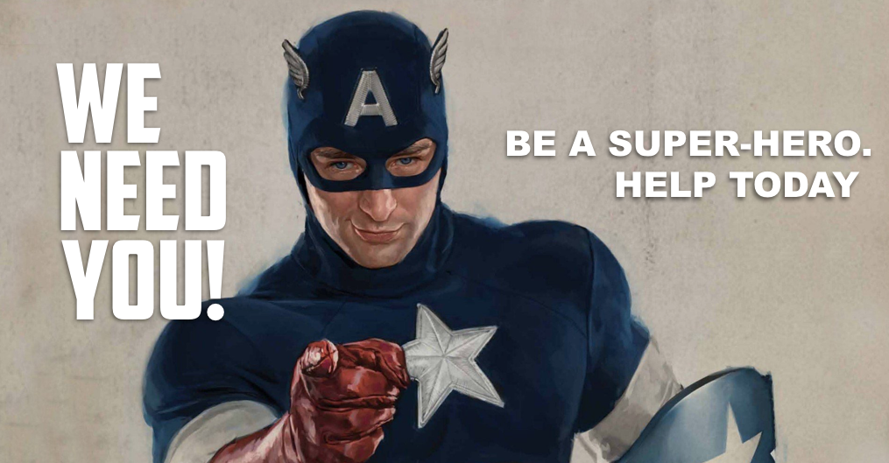

Essa página apresenta informações sobre a liga da justiça e seus membros . Para mais informações, contate-nos ou clique no logo da Liga da Justiça.
Nós somos os protetores da terra, os heróis que sempre protegerão a humanidade e sua liberdade, enfrentando todo o mau e aqueles que buscam causar danos a humanidade.
Batman, o Guardião de Gotham, o Cavaleiro Das Trevas. Para os criminosos ele representa o medo, para todos os outros, justiça. Esse herói pode ser apenas humano, mas é considerado um dos heróis mais perigosos do mundo, você não quer puxar uma briga contra esse cara.
Além de ser um exímio artista marcial, o Batman é considerado o melhor detetive do mundo e é um líder não oficial da liga da justiça.
Wonder Woman, ela é a princesa de Themyscira, uma guerreira amazona. Diana é capaz de enfrentar deuses sozinha. Seu arsenal é composto por sua armadura, uma espada, escudo e o laço da verdade, sem contar suas superhabilidades como superforça, supervelocidade, super resistência, entre outros.
A maior heroína da terra, um dos pilares da liga da justica.
O Superman, ele é um símbolo de esperança para toda a humanidade, o herói mais forte da liga da justiça. Com um arsenal de poderes, apenas ele consegue enfrentar inimigos como Apocalipse e Darkseid.
O Superman é sem dúvidas o herói mais carismático da liga da justiça, com sua bondade e senso de justiça, se tornou o favorito dos humanos.
O Flash, o homem mais rápido vivo, utiliza a força da aceleração para proteger sua cidade e o mundo.
O Flash representa a determinação, esse herói sempre estará pronto para se sacrificar pelos seus amigos, sem dúvidas, o herói mais nobre da liga da justiça.
Aquaman, o rei dos mares. General da maior força bélica do mundo e comandante de 70% do planeta.
Arthur é o herói mais subestimado da liga, porém é capaz de dominar o mundo se quiser... Ainda bem que ele está do nosso lado.
O lanterna Verde, seu poder vem da sua força de vontade. Seu juramento é:
"No dia mais claro, na noite mais densa
Nenhum mal escapará à minha presença
Todo aquele que venera o mal há de penar
Quando o poder do lanterna verde enfrentar."
The Cyborg, o herói sofreu um acidente mortal, mas seu pai o salvou o fundindo com máquinas. Ciborgue é metade humano, metade robô, sendo um dos membros mais valiosos da liga da justiça em relação à logística e tecnologia, ele ja fez parte dos jovens titãs, mas acabou entrando para a liga quando o grupo acabou.
Para Realizar o cadastro como um apoiador da Liga da Justiça clique na imagem abaixo...
